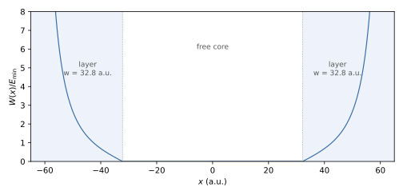

Boundary Conditions
The computational box has a wall condition, Neumann (default) or Dirichlet, which applies to all walls of all axes. Independently of it, a complex absorbing potential (CAP) can be added near the walls to remove outgoing electrons. All keys are also listed in Input File.
Wall conditions
Key (aliases) |
Type |
Default |
Description |
|---|---|---|---|
|
string |
|
|
Neumann. The Galerkin equations are assembled over the full basis without constraints. The boundary term of the weak form is dropped, which imposes the natural condition \(m^{-1}\,\partial_n\psi = 0\) only weakly; the wall reflects. The wave function at the wall is not forced to zero, so a box that truncates a bound state lowers its energy below the converged value (Knot Sequences gives a measured example).
Dirichlet. On a clamped knot vector the first and the last B-spline of an
axis are the only functions that do not vanish at the walls. With
BoundaryType = Dirichlet their coefficients are fixed to zero: their rows
and columns are removed from \(H\) and \(M\), and a decoupled
diagonal entry is kept for each, which gives one spurious eigenvalue per wall
coefficient near the top of the discrete spectrum. The same rows and columns
are removed from the time-dependent and diagnostic operators (dipole,
velocity, force, CAP, \(L_z\)), so the wall coefficients stay zero during
propagation. With Dirichlet walls the monitors use the assembled sparse
matrices; the factorised (-tdsez_tensor_ops) and quadrature-point
(-tdsez_quad_obs) evaluations are disabled (CLI Flags).
Both conditions reflect outgoing waves. Dirichlet walls suit potentials that confine the state (quantum wells, hard-wall boxes, singular potentials at the wall), and benchmarks whose reference solution vanishes at the box edge.
Complex absorbing potential
Key (aliases) |
Type |
Default |
Description |
|---|---|---|---|
|
bool |
0 |
Add the CAP to the propagation Hamiltonian. |
|
real |
0.1 |
Lowest momentum \(k_{\min}\) (a.u.) absorbed with small reflection; sets the layer width Eq. (21). Must be > 0. |
|
real |
0 |
Layer width \(w\) per wall (a.u.). A positive value overrides
|
The CAP adds \(-\mathrm{i}\,W(\mathbf r)\) to the Hamiltonian of the time propagation, with the transmission-free profile of Manolopoulos [Manolopoulos2002]. Every axis \(a\) of the problem receives an absorbing layer of width
at both of its walls. Within a layer, with \(u \in [0, w)\) the depth measured from the inner edge of the layer and \(r = c\,u/w\),
and \(W_a = 0\) outside the layers. The profile starts at zero at the inner edge (no step that would reflect slow electrons) and diverges at the wall; at the wall itself the argument is held just below the pole \(r = c\). The contributions of the axes add, \(W = \sum_a W_a\), so boxes of any aspect ratio are absorbed on every face. Electrons with momentum above \(k_{\min}\) (energy above \(E_{\min}\)) are absorbed with a reflection probability below about 1 % [Manolopoulos2002]; slower electrons are partly reflected.


Fig. 4 CAP profile \(W(x)/E_{\min}\) of Eq. (22)
on the axis \([-65, 65]\) a.u. with CAPKmin = 0.2
(\(w = 32.8\) a.u.); shaded: absorbing layers. Script
figures/make_Boundary-Conditions-cap.py.
Fig. 4 shows the profile. The layers are placed
at the walls of each axis (including OffsetX/Y/Z). Input validation
requires \(w \le 0.45\,(L_{\max} - L_{\min})\) on every axis, so that a
free core remains, and stops the run otherwise.
Choosing the layer
The layer width and the lowest absorbed momentum are one parameter, \(w\,k_{\min} \approx 6.555\). Set either
CAPWidth(the part of the box spent on absorption) orCAPKmin(the slowest electron to absorb). A wider layer absorbs slower electrons but requires a larger box.The physically relevant region must lie in the free core. For HHG this is the quiver motion of amplitude \(\alpha = E_0/\omega^2\) and the returning trajectories.
With
EnableCAP = 1the start-up output reports the layer width, the absorbed momentum range and, for each axis, the absorbing intervals and the free-core width. When the field scales are known (Knot Sequences, field-resolution check), it compares the free-core half width of each polarised axis with \(2\alpha + 10\) a.u. and prints a warning when it is smaller.A t-SURFF surface must lie in front of the layers (Photoelectron Spectra (t-SURFF)).
To check that reflections are negligible, compare the observables (for example the HHG spectrum or the bound-state population) with a run in a larger box or with a smaller
CAPKmin.
-tdsez_cap_check additionally assembles the CAP with the element kernel
and prints the largest difference to the separable assembly
(CLI Flags).
Reflecting and absorbing boundaries compared
Neumann or Dirichlet walls only |
With CAP |
|
|---|---|---|
Outgoing flux |
Reflected into the box |
Absorbed in the layers |
Norm |
Conserved |
Decreases as flux is absorbed |
Typical use |
Bound-state dynamics, confined systems |
Ionisation, HHG, photoelectron spectra |
Parameters |
None |
|